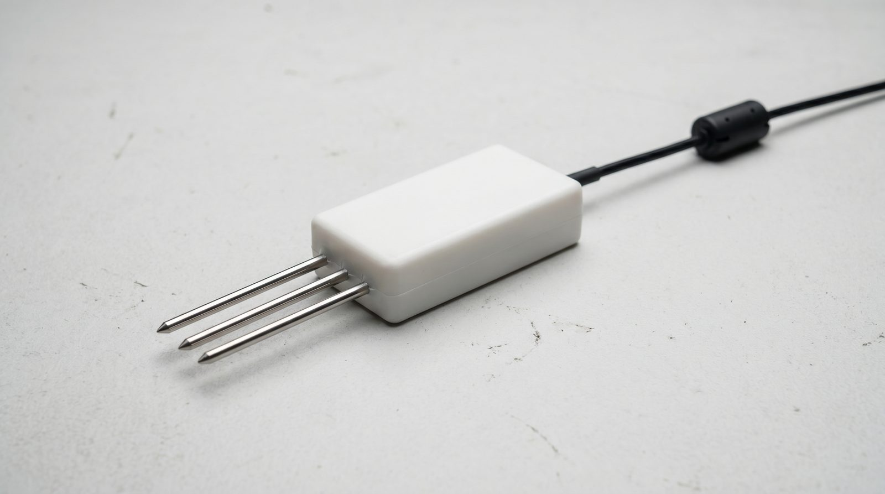
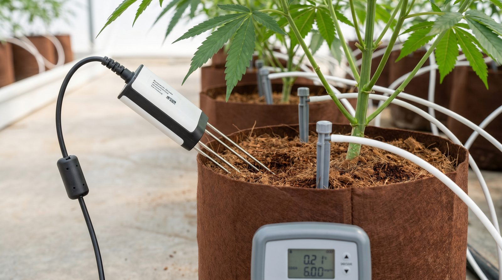

Root-zone state estimation with the TEROS-12 sensor
A TEROS-12 capacitance probe measures three things in your pot. This guide explains what each number means, why the raw reading is not the truth, and how to turn it into safe irrigation decisions.
What this is, and who it's for
A TEROS-12 is a small probe you bury in growing media: coco, rockwool or soil. It reports three things down a single digital wire: how much water is in the media, how salty that water is, and the temperature. This guide explains, from zero, what each of those numbers means, how the probe arrives at them, and why you should never wire the probe straight to a valve.
A single probe is one noisy local witness. It samples a roughly 1010 mL pocket of one pot, not the whole zone.[8] Everything that follows turns that one local, uncertain reading into a number you can actually steer irrigation on.
- The TEROS-12 reports volumetric water content (VWC), bulk electrical conductivity (EC) and substrate temperature over a digital protocol called SDI-12.
- Its ‘volume of influence’ is only about 1010 mL of media around the prongs. It sees one local spot, not the average of a tray or a zone.
- The goal is to convert that noisy local reading into a trustworthy estimate of stored water, with the uncertainty stated openly rather than hidden.
- No prior knowledge of soil sensors is assumed. Every term is defined the first time it appears.
This is for anyone putting a moisture probe in a pot who wants to steer on it honestly. It pairs with the smart watering (VWC/EC) guide and the coco crop-steering paper.

Key terms, defined once
Here is the small set of words this whole field hangs on. You don't need to memorise them. Each one comes back in context.
How the probe turns an electric field into a water number
The TEROS-12 is a capacitance probe. Its prongs create a high-frequency electric field in the surrounding media and measure how strongly the media stores that field, which is its permittivity. Because water's permittivity (~80) towers over dry media (~3–5) and air (~1), the bulk permittivity rises steeply and predictably as water content rises. That makes permittivity a stand-in for VWC.[1]
The sensor then applies a calibration equation (a generic mineral-soil curve by default) to map measured permittivity to a VWC number, reporting it to 0.001 m³/m³ resolution. The catch is baked in from the start: that mapping is media-specific, and the generic curve is only good to ±0.03 m³/m³.[8]
- Capacitance and permittivity are the physical quantity. VWC is a derived, calibrated estimate sitting on top of it.
- The permittivity-to-VWC curve is nonlinear, especially near saturation, where the response flattens and can fake a ‘full’ reading.
- Substrate temperature is read as a useful output and because temperature shifts the dielectric response, a known effect that can masquerade as a water swing.[4]
- The probe outputs over SDI-12. A stale, NaN, or railed value (pinned at 0 or full-scale) is a hardware fault, not data.

Calibration: why the default number lies a little
Out of the box the TEROS-12 uses a generic mineral-soil calibration, which makes VWC accurate to only ±0.03 m³/m³. A substrate-specific calibration for your exact coco or rockwool tightens that to ±0.01–0.02 m³/m³.[3] That difference is not academic. Crop-steering dryback windows are often narrower than the ±0.03 generic error band, so steering on uncalibrated VWC means steering inside the noise.
A worked headroom example shows the consequence directly. A naive 256 mL of ‘room to water’ shrinks to a safe ~109 mL once you account for ±0.02 accuracy, and to just ~54 mL under the generic ±0.03. Same pot, same probe. The only thing that changed is how honestly you treat the error band.[7]
| Calibration type | VWC accuracy | Resolution | Tight steering? |
|---|---|---|---|
| Generic mineral (default) | ±0.03 m³/m³ | 0.001 m³/m³ | No. Error wider than dryback window |
| Substrate-specific | ±0.01–0.02 m³/m³ | 0.001 m³/m³ | Yes. Required for tight steering |
Calibration corrects an additive offset, but gain error and nonlinearity near saturation persist and do not cancel out in later math. Treat substrate-specific calibration as mandatory for tight steering, not optional, and still respect the residual error.
What EC tells you, and what the probe cannot see
The TEROS-12 measures bulk EC, the conductivity of the whole wet-media mixture, 0–20000 µS/cm. What growers care about is pore-water EC: the salt concentration in the solution actually touching the roots. You get pore-water EC by combining bulk EC, VWC and temperature through the Hilhorst (2000) model.[2]
That model is genuinely useful, but it is parameter-sensitive at roughly ±20% and unreliable below VWC 0.10 m³/m³, where it should not be used at all. The deeper limit is representativeness. The probe integrates one ~1010 mL spot, so channeling, dry pockets, or poor probe-to-media contact can make a perfectly healthy probe report a number that is simply not true of the zone.[3]
- Bulk EC is the raw measurement (0–20000 µS/cm). Pore-water EC is the derived quantity the roots experience.
- Hilhorst (2000) converts bulk EC + VWC + temp to pore-water EC, but is ~±20% sensitive and invalid below VWC 0.10 m³/m³.[2]
- Representativeness fault: the probe can be fine while its 1010 mL is not representative of the zone (channeling, air gap, pulled probe).
- The sensor cannot see per-pot runoff, effective substrate volume (it shrinks as roots grow), or whether a commanded irrigation shot was truly delivered.
| The probe CAN see | The probe CANNOT see | Workaround |
|---|---|---|
| VWC (local spot) | True zone average across pots | Multiple probes, a cohort model |
| Bulk EC | Per-pot runoff volume | Runoff trays / drain sensors |
| Substrate temperature | Effective substrate volume (shrinks with roots) | Periodic re-learning of DUL |
| Derived pore-water EC | Whether an emitter actually fired | Flow meter or load-cell weight jump |
Using it to steer irrigation, step by step
The practical recipe is one demotion and one promotion. Demote the raw VWC reading from ‘truth’ to ‘one noisy witness with a confidence score’. Promote a small running water-balance model that holds the belief about stored water and is only nudged by trusted readings.
You track dryback (the VWC fall between shots), watch specific yield (S = change in VWC per delivered mL) to sense when the pot is filling, and anchor your ceiling on the observed DUL rather than a guessed number. Steer on derivatives, the shape and slope of the dryback, more than the absolute level, because trends shrug off additive calibration error[6]. Never act on a derivative alone without a second witness such as runoff timing or pot weight.
- 1Calibrate to your substrateSubstrate-specific calibration is mandatory for tight steering. Without it you steer inside the error band.
- 2Verify probe contact and positionGood media contact and a fixed, representative spot. A loose probe reports its air gap, not your root zone.
- 3Learn this pot's DULAnchor the ceiling on ~5 corroborated runoff/weight events, not one, and prefer water-volume space over a raw VWC number.
- 4Steer on shape, gated by safe headroomAct on dryback slope and specific yield, bounded by a lower-confidence headroom estimate, not the naive point estimate.
- 5Require a second witnessRunoff onset or load-cell mass must confirm before any signal moves a valve. The reading never reaches the valve alone.
Troubleshooting and pitfalls
Most TEROS-12 disappointments are not the sensor breaking. They are the sensor being believed when it shouldn't be. Make the first distinction clearly. A wrong reading (the probe is fine but its 1010 mL isn't the zone) is a representativeness fault that should lower your trust in absolute VWC. A railed, flatline, NaN or stale value is a hardware or cable fault that should stop you acting entirely.
Watch for VWC that tracks the daily substrate-temperature swing. That is a contact or calibration artifact, not a real storage change[5]. Watch for wetting-versus-drying paths that diverge abnormally (channeling or hydrophobic media), and for one pot that drifts away from its identically-treated siblings (a dud probe or blocked emitter).
Temperature and EC should move your trust in the reading, never the stored-water number directly. A diurnal-temperature artifact can drive a real dielectric shift in dry media that mimics a water change[4]. If you let it write VWC, you will chase ghosts.
| Symptom | Likely cause | What it is NOT | Response |
|---|---|---|---|
| VWC railed / flatline / NaN / stale | Hardware or cable fault | Real water reading | Stop steering. Run a bounded safe routine. Page a human |
| VWC swings with diurnal temp | Poor contact / cal artifact | A real water change | Down-trust absolute VWC; check contact[5] |
| Wetting vs drying diverge oddly | Channeling / hydrophobic media | Sensor failure | Inspect media; re-wet; check probe seating |
| One pot unlike its siblings | Dud probe or blocked emitter | A plant problem (yet) | Inspect emitter and probe before blaming the plant |
Never let one manual reading or a single human observation hard-write your capacity anchor or override a safety interlock. Anchors earn their place from corroborated events, not from one good look.
Realistic expectations
A single TEROS-12 will not give you a per-zone, ground-truth picture of your root zone, and treating it as one is the most common and most expensive mistake. With substrate-specific calibration you can realistically resolve dryback trends and approximate stored water to about ±0.01–0.02 m³/m³ in the spot the probe occupies. That is good enough to steer if you account for the uncertainty and cross-check it.[3]
- Best case with calibration: trustworthy dryback shape and ~±0.01–0.02 m³/m³ stored-water estimate for the probe's local spot.
- Not achievable alone: per-zone runoff, delivery verification, or a true zone average across pots.
- A load cell (pot weight) is the highest-value add-on because it is the one measurement that does not route through dielectric physics.
- Expect, and design for, explicit ‘I cannot tell’ outputs rather than false precision. Control authority should be earned, not assumed.
The mature stance is to demand that the system say when it cannot tell, rather than emit a confident number it has not earned. Get the probe calibrated, add one independent witness, and read the smart watering (VWC/EC) guide for how those signals drive shots, and the signal-and-noise paper for separating a real trend from sensor noise.
References
- Topp, G. C., Davis, J. L., & Annan, A. P. (1980). Electromagnetic determination of soil water content: Measurements in coaxial transmission lines. Water Resources Research, 16(3), 574-582. https://doi.org/10.1029/WR016i003p00574
- Hilhorst, M. A. (2000). A Pore Water Conductivity Sensor. Soil Science Society of America Journal, 64(6), 1922-1925. https://doi.org/10.2136/sssaj2000.6461922x
- Fragkos, A., Loukatos, D., Kargas, G., & Arvanitis, K. G. (2024). Response of the TEROS 12 Soil Moisture Sensor under Different Soils and Variable Electrical Conductivity. Sensors, 24(7), 2206. https://doi.org/10.3390/s24072206
- Nasta, P., Coccia, F., Lazzaro, U., Bogena, H. R., Huisman, J. A., Sica, B., Mazzitelli, C., Vereecken, H., & Romano, N. (2024). Temperature-Corrected Calibration of GS3 and TEROS-12 Soil Water Content Sensors. Sensors, 24(3), 952. https://doi.org/10.3390/s24030952
- Kapilaratne, R. G. C. J. & Lu, M. (2012). Correcting the Temperature Influence on Soil Capacitance Sensors Using Diurnal Temperature and Water Content Cycles. Sensors, 12(7), 9773-9790. https://doi.org/10.3390/s120709773
- Tavan, M., Wee, B., Brodie, G., Fuentes, S., Pang, A., & Gupta, D. (2021). Optimizing Sensor-Based Irrigation Management in a Soilless Vertical Farm for Growing Microgreens. Frontiers in Sustainable Food Systems, 4, 622720. https://doi.org/10.3389/fsufs.2020.622720
- Nemali, K. S. & van Iersel, M. W. (2006). An automated system for controlling drought stress and irrigation in potted plants. Scientia Horticulturae, 110(3), 292-297. https://doi.org/10.1016/j.scienta.2006.07.009
- METER Group, Inc. (2023). TEROS 11/12 User Manual & Specifications. METER Group, Pullman, WA. (manufacturer source, not peer-reviewed) https://metergroup.com/products/teros-12/
Citations marked in-text as [n] map to this list. Peer-reviewed sources except where noted. Cannabis tissue culture is strongly genotype-dependent, verify dilutions, hormone doses and local regulations against the primary sources before relying on them.